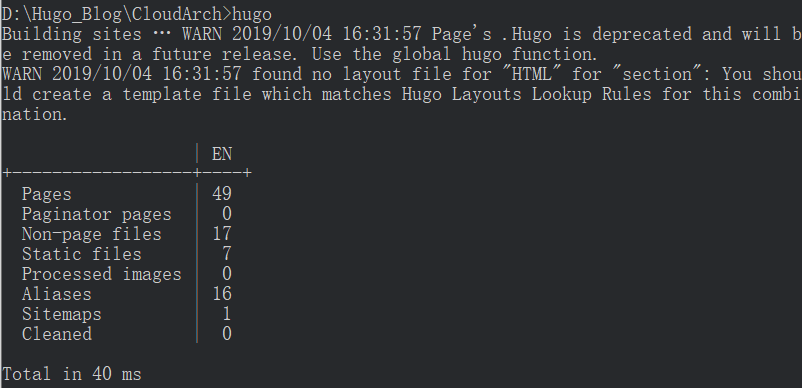

Hugo+GitHub Pages搭建个人博客
1、安装配置Hugo
Hugo是一个Go语言开发的静态网站生成器，可以非常快速的将纯文本转化为静态网站和博客。类似的工具还有Hexo（基于Node.js）和Jekyll（基于Ruby）等。Hugo的优点是运行速度快，不需要安装Node.js等运行环境，使用简单。
Hugo是Github开源项目，地址：[https://github.com/gohugoio/hugo]
直接下载对应操作系统的压缩包解压即可使用。Mac系统可以直接使用brew install hugo。Windows系统可以将Hugo运行路径加入系统的Path环境变量中，就可以在CMD中直接运行hugo命令。
2、创建本地站点
1、在当前目录下生成一个HugoSite目录：hugo new site HugoSite
2、进入themes目录下，添加博客主题。本文使用的主题基于下面两个主题进行修改：
https://github.com/bjhee/maupassant-hugo
https://github.com/rujews/maupassant-hugo
在HugoSite/themes目录下添加主题：git clone https://github.com/rujews/maupassant-hugo
3、修改HugoSite目录下config.toml文件：
baseURL = "https://www.cloudarch.tech"
languageCode = "zh-CN"
title = "CloudArch"
theme = "maupassant-hugo"
hasCJKLanguage = true # 中日韩语言支持
enableRobotsTXT = true # 爬虫支持
PaginatePath = "page" # 分页
summaryLength = 140 # 摘要显示字数
[author]
name = ""
# homepage = ""
[params]
author = ""
subtitle = ""
keywords = ""
busuanzi = true
## 保持分类的原始名字（false会做转小写处理）
preserveTaxonomyNames = false
## 是否禁止URL Path转小写
disablePathToLower = false
related = true # 是否显示See Also其他文章
recentPostNumber = 10 # 右边栏最近文章链接的个数，默认为10
# customCSS = ["style.extra.css"]
# customJS = ["app.extra.js"]
[params.utteranc]
enable = true
repo = "splintereddy/cloudarch_comments" # 存储评论的Repo，格式为 owner/repo
issueTerm = "pathname" #表示你选择以那种方式让github issue的评论和你的文章关联。
theme = "github-light" # 样式主题，有github-light和github-dark两种
[menu]
# 博客中主菜单，weight代表排列顺序，数值越小越靠左，最左面是"主页"
[[menu.main]]
identifier = "archives"
name = "归档"
url = "/archives/"
weight = 8
[[menu.main]]
identifier = "about"
name = "关于"
url = "/about/"
weight = 9
4、创建归档页。在HugoSite/content目录下创建archives.md文件，文档中添加下面的内容：
---
title: "归档"
type: "archives"
---
5、创建关于页面。在HugoSite/content目录下创建about.md文件，文档中添加下面的内容：
---
title: "关于"
author: ""
type: "about"
---
6、创建新博客文章。以.md文档编写博客，放在HugoSite/content/post目录下。文档开头需要有如下格式：
title: ""
date: 2019-01-01T20:21:52+08:00
draft: false
tags: ["",""]
categories: [""]
toc: True # 设置是否显示目录
3、将博客上传到GitHub Pages
1、在HugoSite目录下打开CMD，运行命令hugo，Hugo就会在public目录下自动生成静态页面。

2、在GitHub中创建一个public repository，将public目录下所有文件上传到github中。在repository的Settings/GitHub Pages设置域名，便可以通过此域名访问自己的博客。